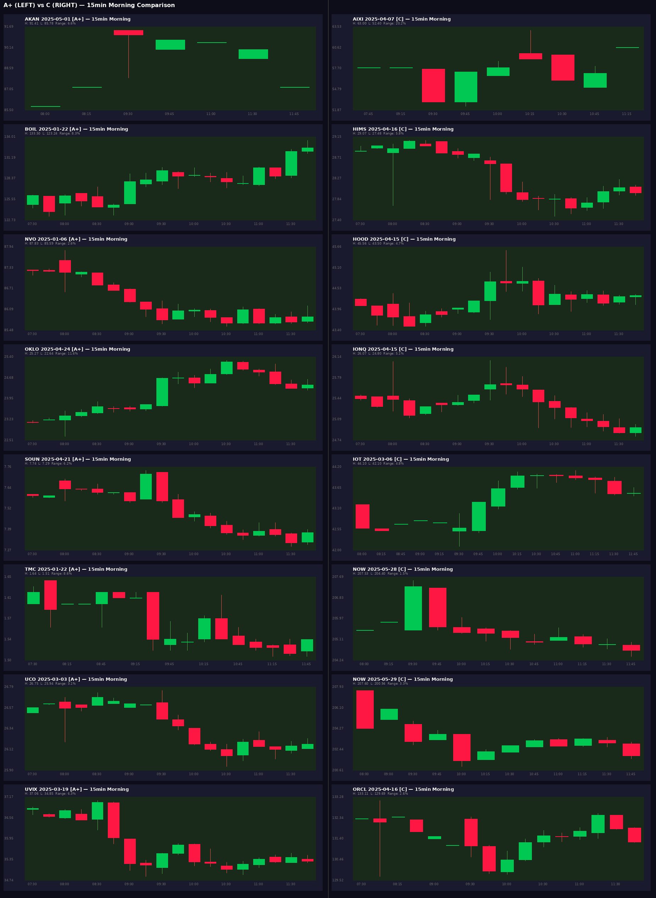

🔬 Edge Research — Backside B Signal Analysis
56 graded signals: A+(14), A(13), B(13), C(16) — 44 with Polygon data
Key Findings
Finding 1: D-1 Setup is the #1 Edge
A+/A signals have D-1 green 76% of the time (vs C: 25%).
The prior day's close strength is the strongest single predictor (d=0.93).
A+/A: D-1 closes near high (position 0.57) vs C: 0.38
Interpretation: The best signals come after a strong prior day — momentum carries into D0 morning push.
Finding 2: D0 Red Bar is Actually Good
A+/A signals have D0 red 73% of the time (vs B: 18%, C: 69%).
The D0 daily candle closes red because the intraday push fades — the morning push IS the trade.
B signals that hold green D0 often have less explosive morning moves.
Interpretation: The fade IS the signal. Best entries are where morning push fails to hold — but you've already exited.
Finding 3: Consecutive Green Bars at Open
A+/A average 0.55 consecutive green first bars vs C: 0.15 (d=0.91).
The best signals open with immediate buying pressure — the first bar(s) are green.
Interpretation: Strong open = continuation momentum. Weak/no green open = distribution, not accumulation.
Finding 4: Push Bar Closes Strong
Push bar close position: A+/A = 0.49, C = 0.33 (d=0.50).
The push bar itself matters — C signals have wicks at the top (distribution into strength).
A+/A push bars close near their midpoint or higher.
Finding 5: 100% Hit Rules Found
dm1_range > 6.6% AND dm1_change > 0.2% → 8/8 A+/A (30% coverage)
dm1_pm_change > 0.6% AND dm1_pm_range > 4.9% → 8/8 A+/A
These are D-1 afternoon momentum + range conditions. When D-1 has strong PM action, D0 push is reliable.
A+ Signals — 15min Morning Charts
C Signals — 15min Morning Charts
A+ vs C Side-by-Side

Feature Separation Table
| Feature | Cohen's d | A+/A avg | B avg | C avg | Interpretation |
|---|
| dm1_change_pct | 0.93 | +1.13% | +0.34% | -3.08% | Prior day green = strong setup |
| consec_green_open | 0.91 | 0.55 | 0.36 | 0.15 | Immediate buying at open |
| dm1_close_position | 0.71 | 0.57 | 0.52 | 0.38 | Prior day closes strong |
| push_close_position | 0.50 | 0.49 | 0.52 | 0.33 | Push bar quality |
| new_high_bars | 0.44 | 2.65 | 3.18 | 1.85 | More new highs = staircase |
| open_to_high_5m | 0.41 | 2.97% | 4.55% | 1.97% | Open-to-high expansion |
Proposed Groupings
Group 1: "D-1 Momentum" (60% hit rate, 33% coverage)
D-1 late ramp > 0.5%
6 A+, 3 A, 4 B, 2 C
BOIL-01-22
TMC-01-22
BNAI-01-26
VG-03-19
OKLO-04-24
AKAN-05-01
OKLO-04-16
AAL-04-17
QUBT-05-12
Group 2: "Staircase Push" (62% hit rate, 19% coverage)
EMA extension > 2% + staircase structure
3 A+, 2 A, 3 B
BOIL-01-22
UCO-03-03
OKLO-04-24
HIMS-03-10
OKLO-04-15
Group 3: "D-1 Range Expansion" (100% hit rate, 30% coverage)
dm1_range > 6.6% AND dm1_change > 0.2%
5 A+, 3 A, 0 B, 0 C
BOIL-01-22
TMC-01-22
VG-03-03
VG-03-19
UVIX-03-19
HIMS-03-10
OKLO-04-15
QUBT-05-12
Group 4: "Strong Open" (74% first bar UP)
First bar UP + consec_green_open >= 1
A+/A: 74% first bar UP vs C: 38%
BOIL-01-22
TMC-01-22
UCO-03-03
VG-03-19
UVIX-03-19